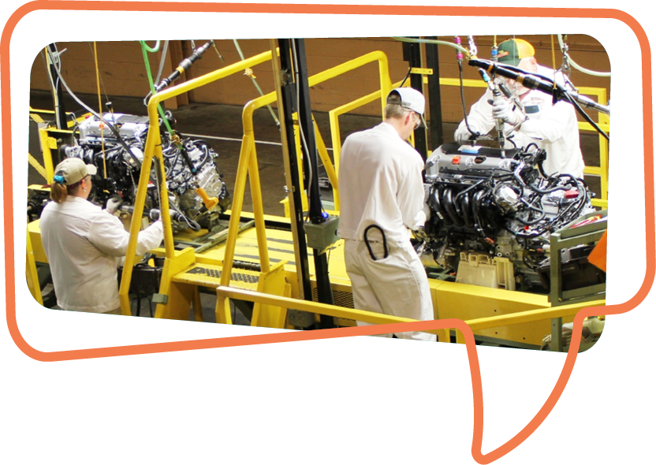

A key to our success is what we call the “Associate Voice.” When
associates have ideas or concerns about a production process or
policy, we encourage them to speak up and welcome their
involvement in our efforts to improve our operations. Our success
depends on it!
In fact, the “Associate Voice” is a formal initiative implemented
across every Honda production facility in America. The more we
listen, the more valuable insights we receive from associates, and
the better our company and products become.
Every time we introduce a new product, Honda associates
contribute hundreds of suggestions to change the design or
processes to make it easier to build. We don’t know of another
automaker where production associates have such a strong voice
in new vehicle design or company policies.
Most recently, based on associate feedback, we launched numerous
new benefits under our Employment Experience initiative, including
paid family leave, a childcare reimbursement account, home buyer
support and a lifestyle reimbursement account.
We will continue to invest in our people, value their ideas and
work together to create products of the highest quality for our
customers and maintain the unprecedented job security for our
associates.
MAKING PROGRESS BY LISTENING TO EACH OTHER
Your Voice Is Our Strength
Inspiring Honda's Future
Associate Voice
WHEN ASSOCIATES SHARE IDEAS AND INPUT, POLICIES AND PROCESSES CAN IMPROVE.
WHAT IS THE EFFECT ON COMMUNICATION WHEN A UNION IS PRESENT AT A
MANUFACTURING COMPANY?
The UAW creates and fosters an “us vs. them” attitude in the
workplace. The UAW needs this divisive environment in order to claim
it can fix it. An “us vs. them” approach is not good for anyone, but
that’s the union’s first and most important goal.
The UAW is a business with a bureaucracy and a “pecking order” of communication. The UAW’s system of local officers and “shop chairmen” intrudes on a company’s free flow of information and makes each associate’s access to knowledge more difficult.
The union’s first goal is always preservation of the union itself.
Self-preservation is placed ahead of any workplace objectives set by associates or a company.
Communication between associates and management must flow quickly and honestly. But in the UAW model, critical information must flow through the ranks of the union officer system. Therefore, communication is slowed down and delayed as union officials evaluate information and what associates should hear or, in many cases, not hear.
The UAW is a business with a bureaucracy and a “pecking order” of communication. The UAW’s system of local officers and “shop chairmen” intrudes on a company’s free flow of information and makes each associate’s access to knowledge more difficult.
The union’s first goal is always preservation of the union itself.
Self-preservation is placed ahead of any workplace objectives set by associates or a company.
Communication between associates and management must flow quickly and honestly. But in the UAW model, critical information must flow through the ranks of the union officer system. Therefore, communication is slowed down and delayed as union officials evaluate information and what associates should hear or, in many cases, not hear.

How does UAW communication compare with Honda?
The UAW system is at odds with the basic principles of Honda, where
it’s understood that all our voices and viewpoints should be
considered.
Honda places a high value on ideas – with no outside influence
or filter.
In this way, associate concerns are reflected to the actions of the company. Importantly, associate information can be put to work quickly to solve a problem or improve a process. When it comes to operating on the plant floor, speed of communication is critical for the safety of our associates and the quality of our products.
In this way, associate concerns are reflected to the actions of the company. Importantly, associate information can be put to work quickly to solve a problem or improve a process. When it comes to operating on the plant floor, speed of communication is critical for the safety of our associates and the quality of our products.
HEAR NICK’S STORY

Honda’s business model is built on teamwork and mutual respect,
and open communication has proven to be crucial to helping our
teamwork thrive.
Having an outside party like the UAW, that is not invested in our success as a company and is not familiar with how our systems work, does not lend itself to the principles of continuous improvement that are embedded in the Honda Way and that are held in the hands of our fellow associates.
Having an outside party like the UAW, that is not invested in our success as a company and is not familiar with how our systems work, does not lend itself to the principles of continuous improvement that are embedded in the Honda Way and that are held in the hands of our fellow associates.